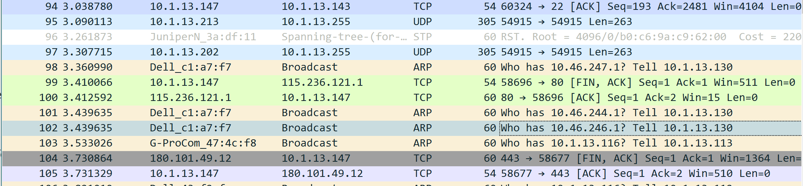
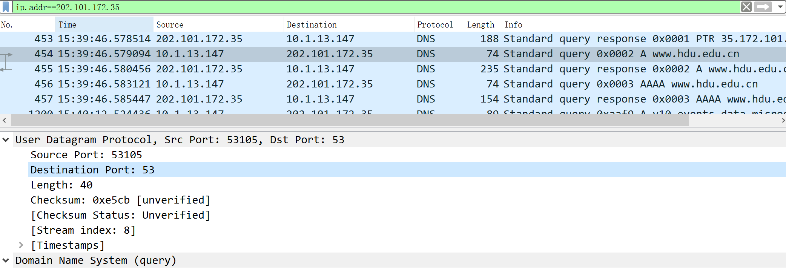

Domain name system
Part1
List 3 different protocols that appear in the protocol column in the unfiltered
packet-listing window in step 7 above.
How long did it take from when the HTTP GET message was sent until the HTTP
OK reply was received? (By default, the value of the Time column in the packet listing window is the amount of time, in seconds, since Wireshark tracing began.
To display the Time field in time-of-day format, select the Wireshark View pull
down menu, then select Time Display Format, then select Time-of-day.)
What is the Internet address of the gaia.cs.umass.edu (also known as www.net.
cs.umass.edu)? What is the Internet address of your computerPrint the two HTTP messages (GET and OK) referred to in question 2 above. To
do so, select Print from the Wireshark File command menu, and select the
“Selected Packet Only†and “Print as displayed†radial buttons, and then click
OK.
Part2
PREREQUISITES
1. Computer Networking: A Top-Down Approach, 7th ed., J.F. Kurose and K.W. Ross (Chapter 1 and Chapter 2) TASK
TASK
1. Install Wireshark (lab. 1 part 1) – you already have all information.
2. Use nslookup to analyze DNS messages
3. Use ipconfig to analyze DNS messages
4. Use Wireshark to analyze DNS messages
nslookup
Run nslookup to obtain the IP-address of a Web-server in China. What is the IP-address of that server
Run nslookup to determine the authoritative dNs servers for a university in Europe
Run nslookup so that one of the dns servers obtained in Question 2 is queried for the mail servers for Yandex mail(or any other What is its iP address?
Make screenshots of your command line and put them in the report put them in the report along with the answers to questions
Ipconfig
Tracing DNS with Wireshark
- Use ipconfig to empty the dns cache in your host
- Open your browser and empty your browser cache. (With Internet Explorer, go to Tools menu and select Internet Options; then in the general tab select Delete Files.
- Open Wireshark and enter ip addr =- your ip address into the filter, where you obtain your IP address with ipconfig. This filter removes all packets that neither originate nor are destined to your host
- Start packet capture in Wireshark
- With your browser, visit the some Web page
- Stop packet capture
Locate the DNS query and response messages. are then sent over UDP or TCP?
​ It can be seen from the query message information and the response messages information they are Sending message via UDP.
What is the destination port for the DNS query message? What is the source port of DNS response message?
Ports are both 53
To what IP address is the DNS query message sent? Use ipconfig to determine the IP address of your local DNS server. Are these two IP addresses the same.
both are 202.101.172.35
Examine the DNS query message. What Type’of DNS query is it? Does the query message contain any“ answers�
Type:A and query message does not contain any "answers".
Examine the DNS response message. How many answers are provided? what do each of these answers contain?
See the picture.
Does this web page contain images? Before retrieving each image, does your host issue new DNS queries?
None
Part3
nslookup domain
Start packet capture.
Do ğ‘›ğ‘ ğ‘™ğ‘œğ‘œğ‘˜ğ‘¢ğ‘ 𝑤𝑤𝑤.ℎ𝑑𝑢.𝑒𝑑𝑢.𝑐𝑛
Stop packet capture. You should get a trace that looks something like the following (on the last pictures).
What is the destination port for the DNS query message? What is the source port of DNS response message?

The destination port for the DNS query message is 53.
The source port of DNS response message is also 53.
To what IP address is the DNS query message sent? Is this the IP address of your default local DNS server
Same as the IP address of the local DNS server
Examine the DNS query message. What “Type†of DNS query is it? Does the query message contain any “answers�
Examine the DNS response message. How many “answers†are provided? What do each of these answers contain?
have 3 answers.
nslookup -type
Now repeat the previous experiment, but instead issue the command:
​ ğ‘›ğ‘ ğ‘™ğ‘œğ‘œğ‘˜ğ‘¢ğ‘ – ğ‘¡ğ‘¦ğ‘ğ‘’=ğ‘𑆠ğ‘ğ‘‘ğ‘‘ğ‘Ÿğ‘’ğ‘ ğ‘ 𝑤ℎ𝑎𝑡 𝑦𝑜𝑢_𝑤𝑎𝑛𝑡
nslookup -type = NS baidu.com
Answer the following questions:
To what IP address is the DNS query message sent? Is this the IP address of your default local DNS server?
Same as the IP address of the local DNS server.
Examine the DNS query message. What “Type†of DNS query is it? Does the query message contain any “answers�

Type: NS
query message does not contain any “answers”.
Examine the DNS response message. What nameservers does the response message provide?
result obtained in Wireshark is the same as the result obtained by running in nslookup.
nslookup 𝑦𝑜𝑢𝑟 _ 𝐷𝑁𝑆
Now repeat the previous experiment, but instead issue the command:
​ ğ‘›ğ‘ ğ‘™ğ‘œğ‘œğ‘˜ğ‘¢ğ‘ ğ‘ğ‘‘ğ‘‘ğ‘Ÿğ‘’ğ‘ ğ‘ 𝑤ℎ𝑎𝑡 𝑦𝑜𝑢 𝑤𝑎𝑛𝑡 𝑦𝑜𝑢𝑟 𝐷𝑁𝑆
nslookup www.baidu.com 114.114.114.114
Answer the following questions:
To what IP address is the DNS query message sent? Is this the IP address of your default local DNS server? If not, what does the IP address correspond to?
They are not the same.This ip corresponds to the ip specified last by entering “nslookup baidu.com 114.114.114.114†in the terminal.
Examine the DNS query message. What “Type†of DNS query is it? Does the query message contain any “answers�
Type: A
query message does not contain any “answers”.
Examine the DNS response message. How many “answers†are provided? What does each of these answers contain?
you can see from the picture above, it contains 3 answers
The result is the same as the result obtained by nslookup in the Terminal.